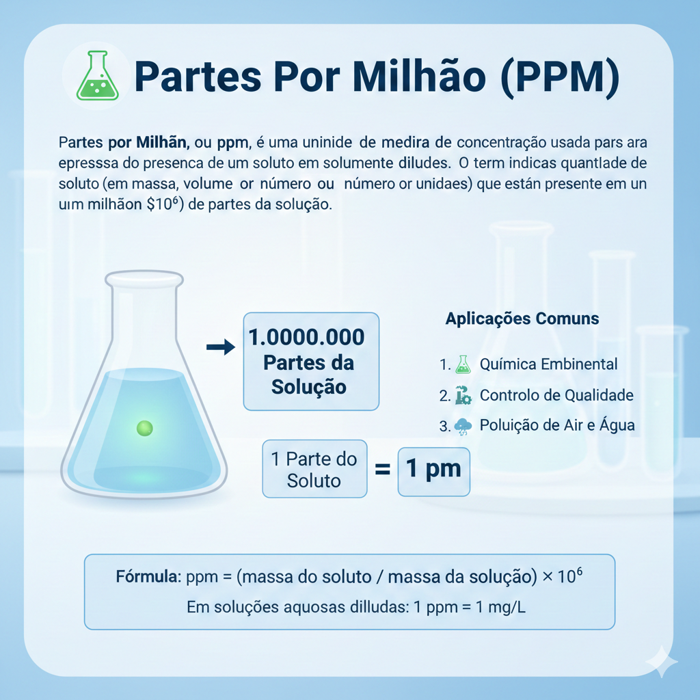

Playlist de Química


Parte por milhão (ppm)
Partes por Milhão, ou ppm, é uma unidade de medida de concentração usada para expressar a presença de um soluto em soluções extremamente diluídas. O termo indica a quantidade de partes do soluto (em massa, volume ou número de unidades) que estão presentes em um milhão ($10^6$) de partes da solução. É uma unidade essencial em áreas como a Química Ambiental e o Controle de Qualidade, pois permite quantificar traços de substâncias. Por exemplo, é frequentemente utilizada para medir a concentração de poluentes no ar e na água (como o cloro ou flúor), ou de impurezas em materiais.Em soluções aquosas muito diluídas, é comum fazer uma aproximação onde 1 ppm é equivalente a 1 mg de soluto por litro (1 L) de solução, já que a densidade da água é próxima de 1 g/mL ou 1 kg/L.
